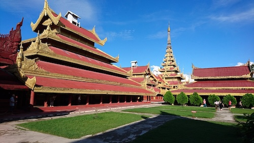
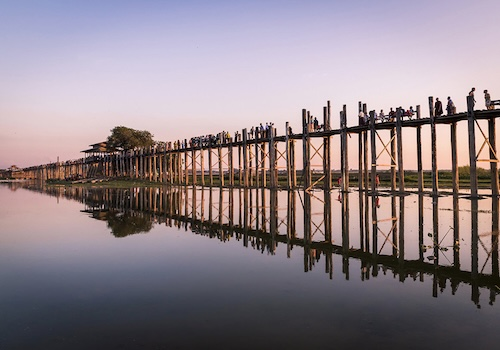
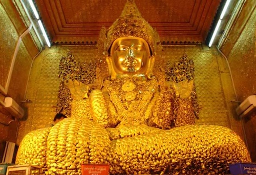
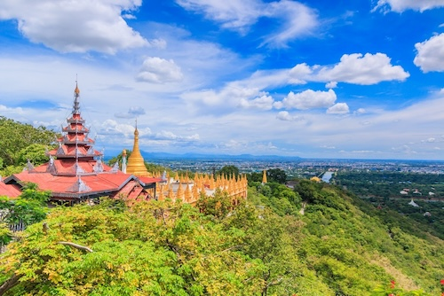
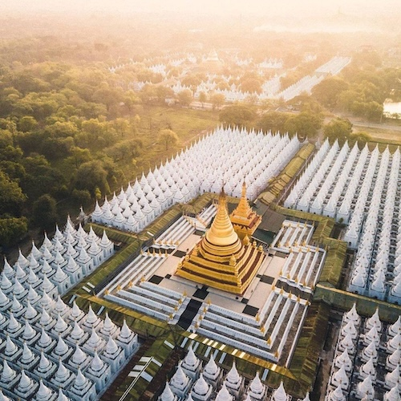

Mandalay
Mandalay Palace
Mandalay Palace is the last royal palace of Myanmar and an important historical landmark. It was the residence of the last Burmese king, King Thibaw, before the British colonized Myanmar. The palace is surrounded by a moat and walls, and visitors can explore the reconstructed buildings, gates, and beautiful grounds.
U Bein Bridge
U Bein Bridge, located just outside Mandalay, is the longest teakwood bridge in the world, stretching over 1.2 kilometers across Taungthaman Lake. Built in the 19th century, it is a stunning sight, especially at sunrise and sunset when the golden bridge is reflected in the water.
Maharmuni Pagoda
Maharmuni Pagoda is one of Myanmar’s most sacred Buddhist sites, home to the Maharmuni Buddha statue. This large statue is highly revered, and visitors can see the gold leaf offerings that are applied to it by worshippers. The pagoda is a popular spot for both locals and tourists alike.
Mandalay Hill
Mandalay Hill offers stunning views of the city and surrounding areas. Visitors can hike or drive to the top to enjoy panoramic views, including of the Mandalay Palace and Irrawaddy River. The hill is dotted with shrines and pagodas, making it a serene and spiritual experience.
Kuthodaw Pagoda
Kuthodaw Pagoda is famous for housing the world’s largest book, made up of 729 marble slabs inscribed with Buddhist scriptures. The pagoda and its surrounding grounds are a must-see for visitors interested in both the spiritual and cultural history of Myanmar.